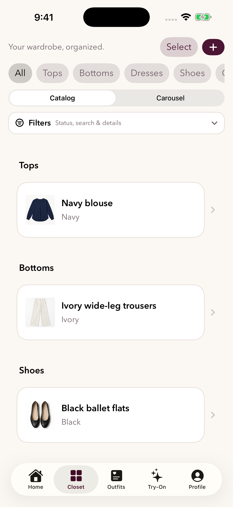
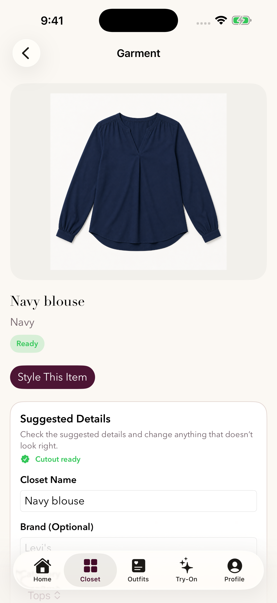
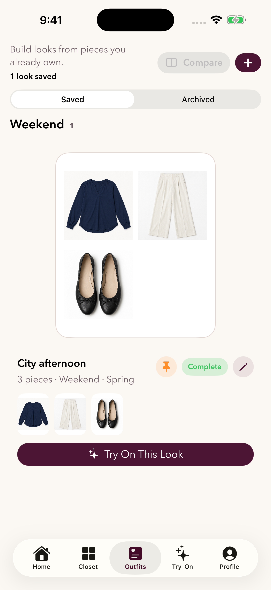

Your wardrobe, reimagined
More possibilities.
Already in your closet.
Bring your clothes together in one place. Find a favorite, build a look, and save it for the next time you need a little inspiration.
MusePair is in a close-circle iOS beta. There is no public download yet.



Try a look before getting dressed.
Optional virtual try-on uses a front body photo and your selected garments to create an AI preview. Results are an approximation, not a guarantee of fit. You can organize clothes and save outfits without uploading a body photo.
The screenshots above show the real app with nonpersonal sample clothing photos. They do not show a generated try-on result.
Already testing? Get help or send feedback.